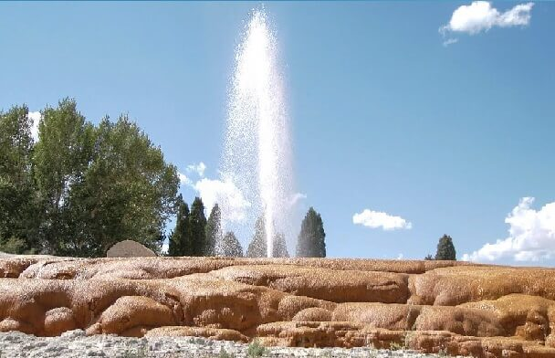

Soda Springs
Weather Summary
Currently:
High: °F
Wind Speed: mph
Wind Chill:
Humidity: %
Incoming Events
Five Day Forecast
About Soda Springs
In the summer of 1937 Soda Springs was drilling a well seeking a hot water source for
a swimming pool but instead found a carbonated water source that sent a geyser spraying
100 feet into the air. The citizens capped the geyser and release the flow once an hour.
You can’t fool mother nature, but in Soda Springs they have her working on a time clock.
If you are a fan of the Guinness Book of World Records, you’ll want to know this is the
world’s only captive geyser.
Be sure to see Formation Springs and Cave located at the base of the scenic Aspen Mountains.
The preserve area was established by the Nature Conservancy to protect the crystal clear
pools and unique wetland complex. The water feeding these terraced pools is very high
in travertine (calcium carbonate), which has created a unique geology for the area,
the most impressive work is Formation Cave which is 10 feet tall at its entrance and
several hundred feet long.